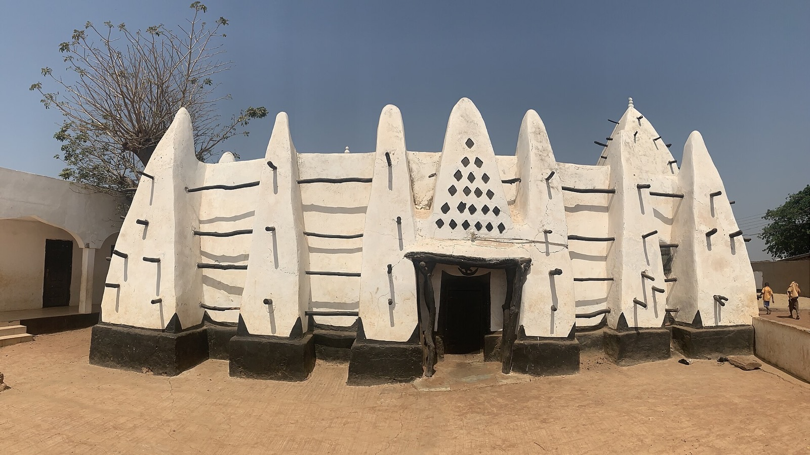
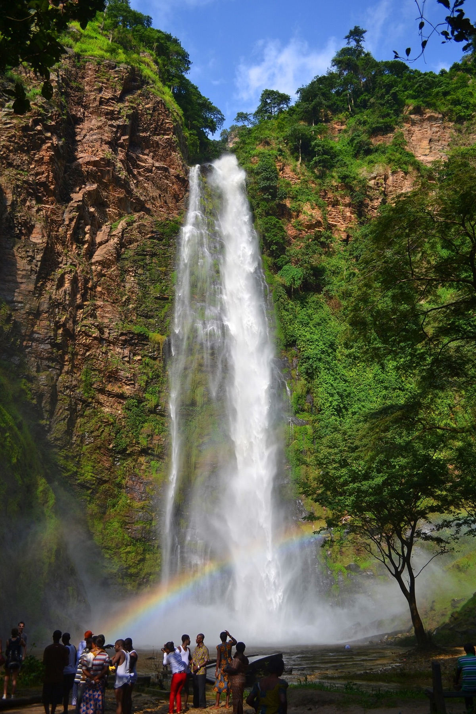

GH–CR / 001
Kakum
40 metres above the forest floor
Central RegionFrame 001Independence Arch
WeatherStorm light / Accra
Living image08 sec loop
Not a bucket list.
A way in.
It is salt air in Jamestown, forest moving under your feet at Kakum, cloth passing hand to hand in a Kumasi workshop, and food you remember by the name of the person who made it.
regions
no shortcuts
01 Field dispatches
40 metres above the forest floor
Central Region
Where Accra meets the Atlantic
Greater Accra
History that refuses to be background
Central Region
Earth, timber, belief and time
Savannah Region
Follow the water into the green
Volta Region02 / Pick a direction
Coastal history, studio culture, late-night food and neighbourhoods that shift mood from block to block.
Touch a region

03 / Made here
GhanaNice gives independent cooks, tailors, designers and makers more than a pin on a map. Each listing carries the place, practice and person behind the business.
Put your work on the map ↗04 / The AI layer
Give GhanaNice a name and one public link. The AI turns scattered signals into a clear draft, while the owner stays in control of what goes live.
Leather goods / Greater Accra
Hand-finished leather bags and everyday accessories, designed and made in Accra with a focus on durable materials and thoughtful detail.
There is always more country than caption.